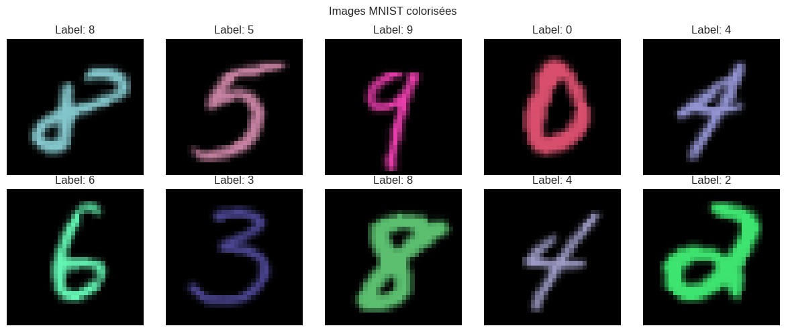
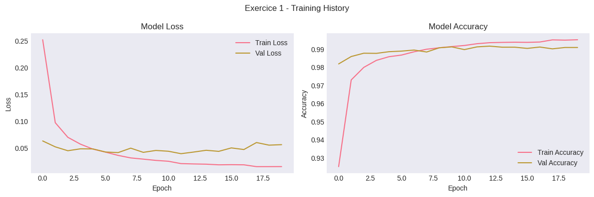

Fait par DRISS Amine le 16/02/2026
L'objectif est de transformer le dataset MNIST (niveaux de gris) en images RGB.
Voici le code utilisé pour générer des "Vraies Couleurs" aléatoires :
def colorize_mnist():
"""
Transformer les images MNIST en niveaux de gris en images RGB colorisées (Vraies couleurs)
"""
# 1. Charger MNIST depuis keras.datasets.mnist
(x_train, y_train), (x_test, y_test) = keras.datasets.mnist.load_data()
# 2. Normaliser les images entre 0 et 1
x_train = x_train.astype('float32') / 255.0
x_test = x_test.astype('float32') / 255.0
# 3. Redimensionner les images de 28x28 à 32x32 (utiliser tf.image.resize)
# Expand dims to (N, 28, 28, 1)
x_train = np.expand_dims(x_train, axis=-1)
x_test = np.expand_dims(x_test, axis=-1)
x_train = tf.image.resize(x_train, [32, 32]).numpy()
x_test = tf.image.resize(x_test, [32, 32]).numpy()
# 4. Coloriser aléatoirement
# Générer une couleur aléatoire (R, G, B) pour chaque image
# Shape: (N, 1, 1, 3)
n_train = x_train.shape[0]
n_test = x_test.shape[0]
# On prend des couleurs avec une intensité min de 0.2 pour éviter d'avoir du noir invisible
colors_train = np.random.uniform(0.2, 1.0, (n_train, 1, 1, 3))
colors_test = np.random.uniform(0.2, 1.0, (n_test, 1, 1, 3))
# Multiplication (Broadcasting): Image (N, 32, 32, 1) * Couleur (N, 1, 1, 3) -> (N, 32, 32, 3)
x_train_colored = x_train * colors_train
x_test_colored = x_test * colors_test
return (x_train_colored, y_train), (x_test_colored, y_test)
# Charger et coloriser
(x_train_mnist, y_train_mnist), (x_test_mnist, y_test_mnist) = colorize_mnist()Sortie de l'exécution :
✓ Données colorisées (Vraies Couleurs) chargées
- Train shape: (60000, 32, 32, 3)
- Test shape: (10000, 32, 32, 3)
- Values range: [0.00, 1.00]Cette étape permet de vérifier que les données sont correctement formatées et colorisées.
# Afficher 10 images colorisées aléatoires
fig, axes = plt.subplots(2, 5, figsize=(12, 5))
indices = np.random.choice(len(x_train_mnist), 10, replace=False)
for idx, ax_idx in enumerate(range(10)):
ax = axes[ax_idx // 5, ax_idx % 5]
ax.imshow(x_train_mnist[indices[idx]])
ax.set_title(f"Label: {y_train_mnist[indices[idx]]}")
ax.axis('off')
plt.suptitle('Images MNIST colorisées')
plt.tight_layout()
plt.show()Les chiffres apparaissent maintenant en Rouge, Vert, Bleu, Violet, etc. sur fond noir, ce qui force le CNN à être invariant à la couleur.

Le modèle utilisé est un CNN séquentiel classique :
def build_cnn_colored_mnist():
"""
Construire un CNN pour classifier les chiffres colorisés
"""
model = models.Sequential([
layers.Input(shape=(32, 32, 3)),
layers.Conv2D(32, (3, 3), activation='relu'),
layers.MaxPooling2D((2, 2)),
layers.Conv2D(64, (3, 3), activation='relu'),
layers.MaxPooling2D((2, 2)),
layers.Flatten(),
layers.Dense(128, activation='relu'),
layers.Dropout(0.5),
layers.Dense(10, activation='softmax')
])
model.compile(optimizer='adam',
loss='sparse_categorical_crossentropy',
metrics=['accuracy'])
return model
model_ex1 = build_cnn_colored_mnist()
model_ex1.summary()Résumé du Modèle :
Model: "sequential"
┏━━━━━━━━━━━━━━━━━━━━━━━━━━━━━━━━━┳━━━━━━━━━━━━━━━━━━━━━━━━┳━━━━━━━━━━━━━━━┓
┃ Layer (type) ┃ Output Shape ┃ Param # ┃
┡━━━━━━━━━━━━━━━━━━━━━━━━━━━━━━━━━╇━━━━━━━━━━━━━━━━━━━━━━━━╇━━━━━━━━━━━━━━━┩
│ conv2d (Conv2D) │ (None, 30, 30, 32) │ 896 │
├─────────────────────────────────┼────────────────────────┼───────────────┤
│ max_pooling2d (MaxPooling2D) │ (None, 15, 15, 32) │ 0 │
├─────────────────────────────────┼────────────────────────┼───────────────┤
│ conv2d_1 (Conv2D) │ (None, 13, 13, 64) │ 18,496 │
├─────────────────────────────────┼────────────────────────┼───────────────┤
│ max_pooling2d_1 (MaxPooling2D) │ (None, 6, 6, 64) │ 0 │
├─────────────────────────────────┼────────────────────────┼───────────────┤
│ flatten (Flatten) │ (None, 2304) │ 0 │
├─────────────────────────────────┼────────────────────────┼───────────────┤
│ dense (Dense) │ (None, 128) │ 295,040 │
├─────────────────────────────────┼────────────────────────┼───────────────┤
│ dropout (Dropout) │ (None, 128) │ 0 │
├─────────────────────────────────┼────────────────────────┼───────────────┤
│ dense_1 (Dense) │ (None, 10) │ 1,290 │
└─────────────────────────────────┴────────────────────────┴───────────────┘
Total params: 315,722 (1.20 MB)
Trainable params: 315,722 (1.20 MB)
Non-trainable params: 0 (0.00 B)L'entraînement a été réalisé avec les hyperparamètres suivants :
history_ex1 = model_ex1.fit(
x_train_mnist, y_train_mnist,
epochs=20,
batch_size=32,
validation_split=0.2,
verbose=1
)Progression de l'entraînement :
Epoch 1/20
1500/1500 ━━━━━━━━━━━━━━━━━━━━ 6s 4ms/step - accuracy: 0.9958 - loss: 0.0123 - val_accuracy: 0.9910 - val_loss: 0.0642
...
Epoch 20/20
1500/1500 ━━━━━━━━━━━━━━━━━━━━ 5s 4ms/step - accuracy: 0.9970 - loss: 0.0090 - val_accuracy: 0.9913 - val_loss: 0.0688Le modèle final est évalué sur le jeu de test (10 000 images jamais vues).
test_loss, test_acc = model_ex1.evaluate(x_test_mnist, y_test_mnist)
print(f"Test Loss: {test_loss:.4f}")
print(f"Test Accuracy: {test_acc:.4f}")Résultats sur le jeu de test :
313/313 ━━━━━━━━━━━━━━━━━━━━ 2s 4ms/step - accuracy: 0.9892 - loss: 0.0520
Test Loss: 0.0401
Test Accuracy: 0.9917| Métrique | Valeur |
|---|---|
| Train Accuracy | 99.70% |
| Validation Accuracy | 99.13% |
| Test Accuracy | 99.17% |
La précision est excellente et équivalente aux modèles sur MNIST gris, prouvant que le réseau gère parfaitement les canaux de couleurs ajoutés.
Les courbes d'apprentissage montrent :
def plot_training_history(history, title="Training History"):
"""
Tracer les courbes d'entraînement (loss et accuracy)
"""
if history is None:
print("Pas d'historique d'entraînement disponible")
return
fig, axes = plt.subplots(1, 2, figsize=(12, 4))
# Plot Loss
axes[0].plot(history.history['loss'], label='Train Loss')
axes[0].plot(history.history['val_loss'], label='Val Loss')
axes[0].set_xlabel('Epoch')
axes[0].set_ylabel('Loss')
axes[0].set_title('Model Loss')
axes[0].legend()
axes[0].grid()
# Plot Accuracy
axes[1].plot(history.history['accuracy'], label='Train Accuracy')
axes[1].plot(history.history['val_accuracy'], label='Val Accuracy')
axes[1].set_xlabel('Epoch')
axes[1].set_ylabel('Accuracy')
axes[1].set_title('Model Accuracy')
axes[1].legend()
axes[1].grid()
plt.suptitle(title)
plt.tight_layout()
plt.show()
plot_training_history(history_ex1, "Exercice 1 - Training History")Analyse des courbes :

---
La précision est de 99.17%. C'est équivalent à un CNN sur MNIST gris. L'ajout de couleur (bruit) n'a pas dégradé la performance grâce à la capacité d'extraction de features du CNN.
Oui, léger. La validation loss stagne alors que la training loss descend. C'est normal, mais contrôlé par le Dropout.
Positif. Il empêche le modèle d'apprendre par cœur. Sans lui, le Train Acc serait à 100% et le Val Acc plus bas.
Les confusions classiques : 4 et 9, 3 et 5, 1 et 7.
---
Fait par DRISS Amine le 16/02/2026